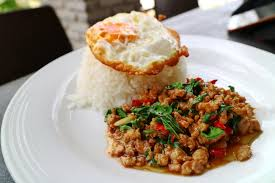

สูตรทำ ผัดกะเพราหมูสับ สูตรร้านอาหารตามสั่ง อร่อยหอมฟุ้งไปทั่วบ้านแน่นอน แถมเป็นสูตรที่ใครได้ลองทานก็ต้องติดใจ! อร่อยง่ายๆ แบบไม่ต้องพึ่งผงฟรุ้งฟริ้งใดๆ เลยจ้าแม่ รับรองว่าทำง่าย อร่อยข้าวเกลี้ยงจานแน่นอน จะมีวิธีการทำยังไงบ้าง ตามไปดูกันเลย
ส่วนผสมและเครื่องปรุง
- เนื้อไก่สับ
- กระเทียม
- พริกขี้หนู
- ใบกะเพรา
- ซีอิ๊วขาว
- ซอสหอยนางรม
- น้ำตาลทราย
- ซีอิ๊วดำ
วิธีทำ
- โขลกพริกแห้งให้ละเอียด แล้วใส่พริกแดงจินดา และกระเทียมโขลกตามลงไปให้ละเอียด
- ตั้งกระทะให้ร้อน ใส่น้ำมันพืชลงไปพอประมาณ ผัดพริกและกระเทียมให้มีกลิ่นหอม
- เมื่อพริกกระเทียมหอมได้ที่แล้ว ใส่ไก่สับลงไปผัดให้กระจาย ไม่เกาะกันเป็นก้อน ผัดให้เข้ากับพริกกระเทียม ให้ไก่สุกในระดับนึง
- แล้วปรุงรสด้วย น้ำมันหอย น้ำปลา ซอสปรุงรส และซีอิ๊วดำหวาน น้ำตาล เล็กน้อย
- เร่งไฟผัดให้เข้ากัน ชิมรสชาติ แล้วใส่ใบกะเพราลงไปผัดให้เข้ากัน ปิดเตา ตักเสิร์ฟ
ตารางโภชนาการ
| สารอาหาร | ปริมาณ | หน่วย |
|---|---|---|
| พลังงาน | 350 | กิโลแคลอรี่ |
| โปรตีน | 25 | กรัม |
| ไขมัน | 20 | กรัม |
| คาร์โบไฮเดรต | 30 | กรัม |
| โซเดียม | 600 | มิลลิกรัม |